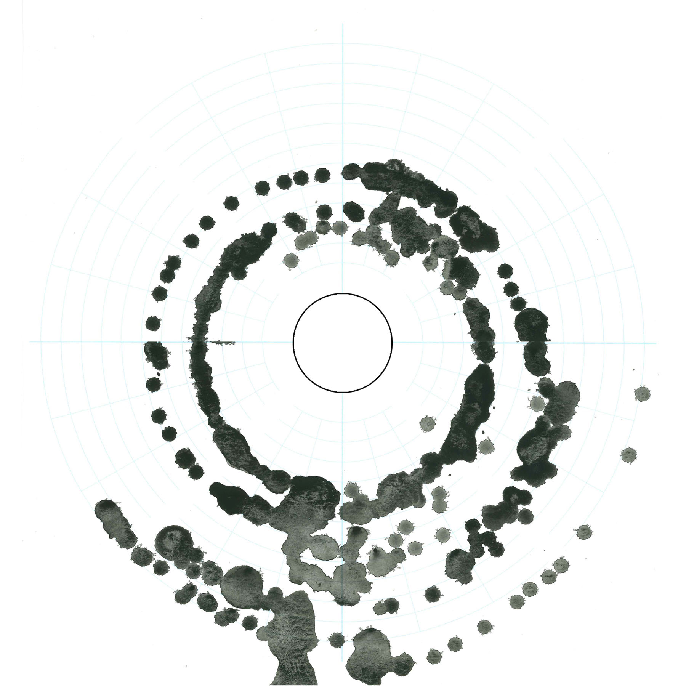

Project span around a simple idea - what will happen to the public space once the streets are cleared of private transport? How would we use and design urban space differently? Group project with Bhakti Loonawat, Gabriele Jureviciute, Kedar Undale, Ozge Tektas, Wei-Hong Wang, faculty Edouard Cabay and Rodrigo Aguirre, research studio at IAAC (more details).
Description

Site is in the heart of Barcelona on the edge of neighborhood of Barceloneta. It has a huge intersection, apart from other mobility infrastructure. To unite functional variety (from residential districts to a public museum) in a meaningful way we created coordinate system to describe urban fabric. Proposed system takes leverage of regular grids of parts of the site with fluid transition in-between.
Site
Further investigating the site I focused on relationship of visual noisiness and preference. Once there is no need to host excess of transportation visual content - a balance of visual real estate would drastically shift. To quantify it we developed a measuring device that would provide data for urban augmented reality tech in future in hopes of avoiding over-saturating. Device itself consists of: preference direction collector over an interval of time and digital comparison of the clutteredness of the views collected over 15 degree viewing intervals. Physical map of the directions by volunteers was than compared with digital analysis of the frames.
Device
The places were chosen in direct visible contact and with contrasting characteristics. Furthermore, they had been chosen with relationship to transportation system rather than touristic routes since they ought to change as public space adapts. While two mentioned qualities are not strictly related they have underlying relationships. Surprisingly, busiest, most clustered views seemed to be attracting most views. In addition, transportation system proven to be playing a role as a detractor of views, proving the hypothesis.
Mapping
Three group measurement maps were overplayed to extract patterns. First noticeable correlation was that often the busiest viewing directions were in fact towards the most crowded parts of the site. Additionally, alternative transportation routes while being restricted by fixed paths of roads could be in a way correlated with the busiest locations. While the data was limited due to time constraints of the studio, these results are conclusive enough as a base for the protocol in development since it is not firmly reliant on specific data - rather on data type.
Group mapping

As our transportation gets more polarized and yet granulized (in terms of speed and domains), and as the efficiency of our technologies gets better - the networked distributed systems would gain popularity in all aspects of our lives, including energy. Even every human step bears kinetic energy of about 14 joules. In such a popular touristic spot with more mobility to come - the landscape of energy consumption and generation would start to resemble a continuous field rather than a grid we are used to associate to it nowadays.
Concept
To represent proposed protocol changes we built detailed extensive physical model. It was thought to focus on the new 'static' elements of the city and leave the potential space as open to adaptations as possible.
Model
While we cannot predict or directly propose a concrete prototype or a system for this fluid networked energy exchange scenario, we can provide a framework for this sort of system. As an example we took smart tiling system that could convert the potential energy we induce on the ground as we walk or drive using alternative transportation systems. The virtual layer of energy flow than was channeled dynamically through help of urban AR to create where necessary positive and negative concentrations points which intern affected back the flow of people closing the loop.
Kinetic system
The protocol was applied to a simulation of future traffic through the site. We imagined how gradually over years the boundaries of roads would get fussier and bled out more and more, how some local event should attract and detract users of the space, crating denser points of energy collection and temporarily inactive locations. Moreover, this generated energy can then be channeled into uses like smart localized street lighting. The movement of a path contributes to a whole spatial field with extra dimension of time.
Computation

To sum it all up, this networked and temporal energy generation and consumption is hard to imagine spatially. Which is why we developed a set of tools to access, analyze and, based on that, characterize the space - creating a measurable way to affect the public domain with future design tools. The performance of the future estimations was projected over the model as part of the final presentation.
Result
Проект закручивается вокруг простой идеи - что произойдет с общественным пространством, если улицы освободятся от частного транспорта. Что поменяется в том, как мы используем и проектируем городские пространства? Групповой проект совместно с Бакти Лунват, Габриэле Йуривичуте, Кедар Ундале, Озге Тектас, Вей-Хонг Вей, под руководством Эдуард Кобей и Родриго Агуирре в исследовательской студии в IAAC (больше деталей).
Описание
Участок находится в центре Барселоны на границе района Барселонета. Помимо большого перекрестка участок содержит много элементов транспортной инфраструктуры. Чтобы объединить функциональное разнообразие (от жилых кварталов до общественного музея) нами была разработана координационная система, описывающая характер городской структуры. Предложенная система использует частичную существующую регулярную сетку и создает плавные переходы между ними.
Участок
Дальнейшее исследование сосредоточилось на соотношении визуального шума и предпочтений. Когда город освободится от транспортной информации - баланс визуального доступного пространства пошатнётся. Чтобы оценить численно эти характеристики мы разработали инструмент, который бы снабжал данными технологии дополненной реальности города будущего для предотвращения визуального перегруза. Так девайс состоит из двух частей. Одна собирает предпочтения направления взгляда во временном промежутке. Вторая анализировала визуальную шумность кадров каждые 15 градусов. Физическая карта затем сопоставлялась с цифровым анализом видов.
Инструмент
Места для измерений были выбраны в прямой взаимной визуальной доступности, но и с наиболее контрастными качествами. Более того, выбор был более сфокусирован на транспортной системе, нежели туристических маршрутах, так как последние непременно изменятся при освобождении улиц. Несмотря на то, что две обозначенные характеристики жёстко не коррелируют, стали очевидны их взаимозависимость. Так неожиданно, более визуально шумные виды привлекали больше внимания. Помимо этого, как и предполагалось гипотезой, в текущем состоянии инфраструктура играла отталкивающую роль и направляла внимание в направлении движения.
Картография
Мы сопоставили три групповые карты измерений для выявления закономерностей. Так первое наблюдение заключалось в том, что часто наиболее визуально шумное, а значит притягивающее внимание, направление было в сторону наиболее плотного потока людей. Маршруты альтернативного транспорта, пусть и ограниченные фиксированными маршрутами дорог, в определённой степени соотносились с наиболее загруженными местами участка. Несмотря на ограниченность собранных данных, они были достаточными для формирования протокола развития городской среды, основанной скорее на типе данных, нежели на конкретном состоянии.
Групповая карта
Вместе с тем как транспорт расширяется в области скоростных режимов и дистанций, и в тоже время как эффективность наших технологий возрастает - сетевые распределённые системы обретают популярность во всех аспектах нашей жизни, включая энергетику. Даже человеческий шаг несёт в себе кинетическую энергию в 14 Джоулей. В таком популярном туристическом месте с растущими потоками альтернативного транспорта - ландшафт генерирования и сбора энергии в городе станет напоминать поле, нежели привычная централизованная сеть.
Концепция
Чтобы продемонстрировать протокол в действии мы создали макет участка. Он фокусировался на новых статичных элементах города - оставляя свободное пространство не затронутым - свободным для интервенции протокола.
Модель
И хотя мы не можем непосредственно предположить, как конкретно будет реализован протокол подобного распределенного поля энергии, мы поможем спроектировать структуру, на которой подобные прототипы смогут базироваться. Так на примере системы умных плиток, собирающие энергию движения и распределяющие далее в точки потребления. Виртуальный слой потоков энергии через дополненную реальность информирует навигацию, создавая искусственные точки притяжения и отторжения. Это в свою очередь меняет распределение энергии, закрывая цепочку.
Кинетическая система
Протокол затем был применён к симуляции в рамках рассматриваемого временного периода. Мы представили, как постепенно границы улиц начнут размываться и растворяться, как местные события начнут возникать на участке, искажая потоки людей и, как следствие, потоки энергии. Энергия может затем локально использоваться для умного городского освещения. Энергия затем вновь информирует распределение потоков людей, вкладывая лепту в пространственно-временной портрет города.
Симуляция
Итак, подобное пространственно-временное поле энергии сложно представить геометрически. Поэтому протокол сфокусировался на создании логики инструментов подобной системы, а также на разработке способа измерять и реагировать на флуктуации этого поля в рамках общественных городских функций.
Результат